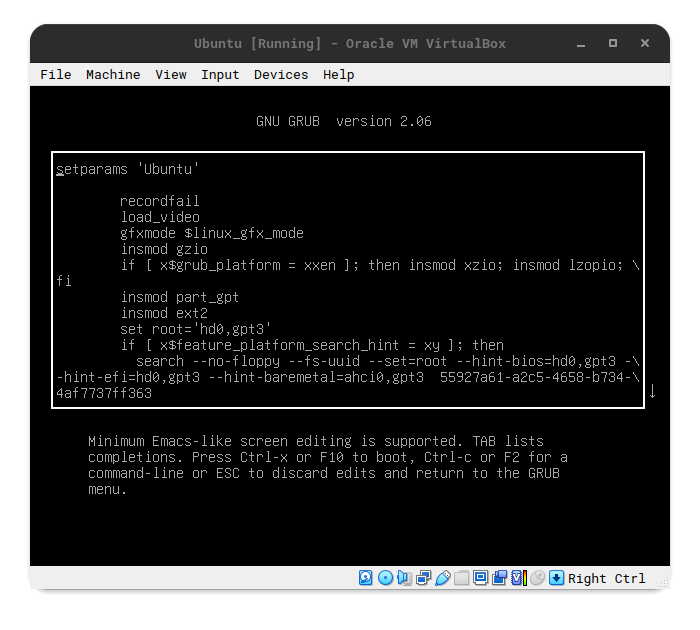
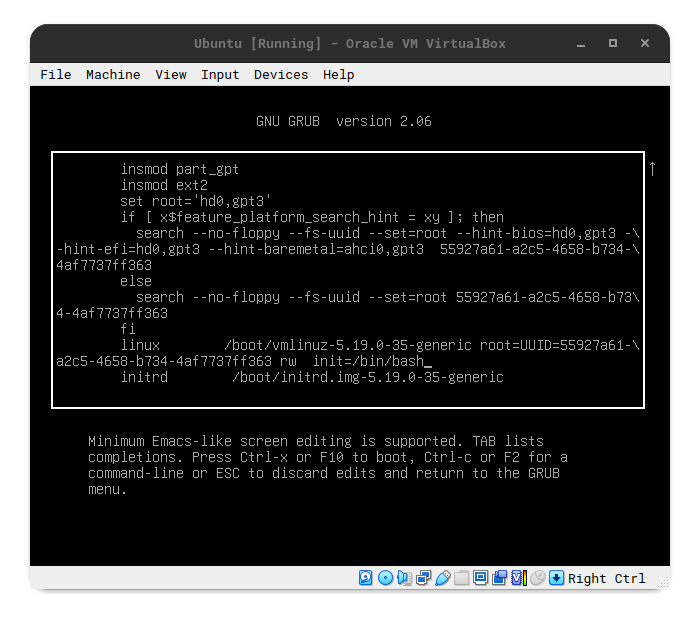
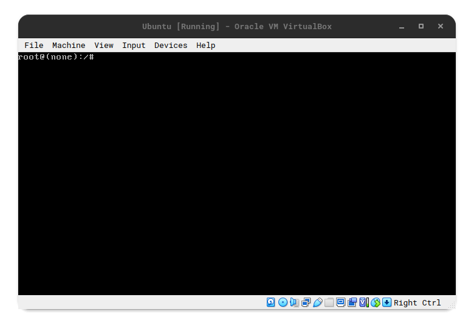
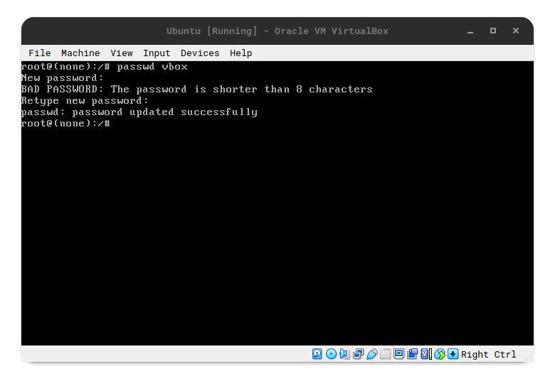
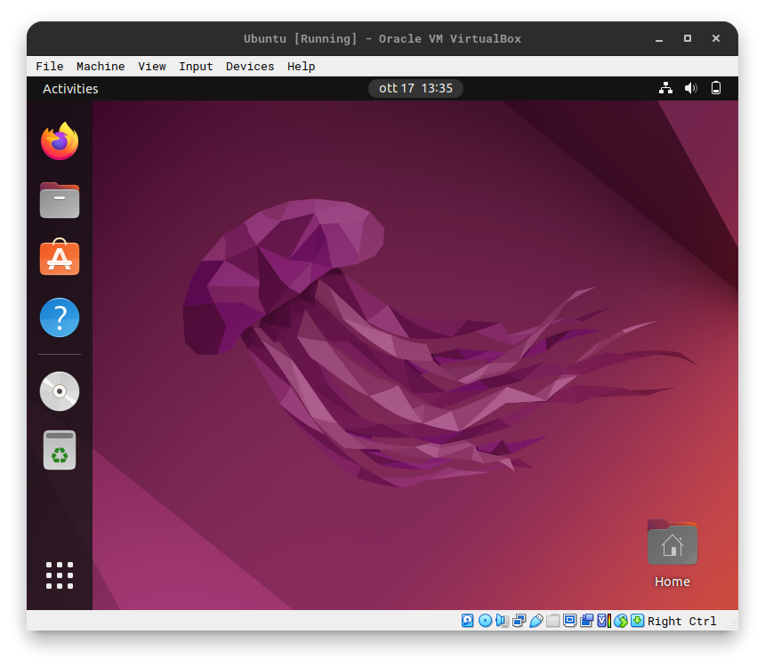

In Linux è molto importante cifrare il disco linux, poichè la password che ci chiede quando
facciamo il login è solamente un modo per accedere all'utente specificato. Tuttavia questo non
ci garantisce una sicurezza nel caso siano modificati i parametri di Boot. Infatti andando a
manipolare quest'ultimi si riesce ad aprire una shell privilegiata in grado di eseguire qualunque
comando si voglia.
Di seguito è riportata la dimostrazione di quanto appena detto:
Nel bootloader andare sulla voce interessata e premere il tasto 'e', questo ci permette di modificare
i parametri di avvio di linux. Se il bootloader non viene visualizzato è perchè grub è stato configurato
in modo che non si fermi nel menu, in questo caso basta tenere premuto il tasto 'SHIFT' durante l'avvio.

Una volta entrato in questa "finestra", dobbiamo cercare la voce "linux" che è il comando responsabile
dell'avvio della distro. Una volta trovata questa voce, dobbiamo cancellare tutto quello che sta dopo ro
(voce responsabile che mantiene Read-Only il sistema) compresa ro, e aggiungiamo "rw init=/bin/bash"
questa stringa farà il mount del sistema in modalità Read-Write(è questa opzione che ci permetterà di modificare la password)
e come prima, una volta avviato il kernel, avvierà una shell privilegiata.

Arrivati a questo punto possiamo fare quello che vogliamo, nel mio caso ho cambiato la password dell'utente vbox, che di fatto
mi ero dimenticato.


Una volta eseguiti i comandi interessati spegnere forzatamente il pc tenendo premuto il tasto di accesione, l comando di shutdown
e di reboot non funzioneranno, questo è dovuto perchè il sistema non è stato avviato.
